Publications
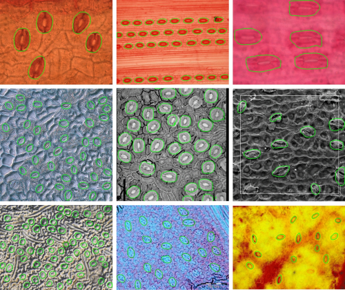
Jayakody, H, Petrie, P, Jan de Boer, H, Whitty, MA, 2021, 'A generalised approach for high-throughput instance segmentation of stomata in microscope images', Plant Methods, vol. 17, num. 27.
Jayakody, H, Petrie, P, Jan de Boer, H, Whitty, MA, 2021, 'A generalised approach for high-throughput instance segmentation of stomata in microscope images', Plant Methods, vol. 17, num. 27.
[PDF] [BibTex] [Code]
Keywords: Automatic stomata detection; Microscope imagery; Mask R-CNN; Instance segmentation; High-throughput analysis; Machine learning
Stomata analysis using microscope imagery provides important insight into plant physiology, health and the surrounding environmental conditions. Plant scientists are now able to conduct automated high-throughput analysis of stomata in microscope data, however, existing detection methods are sensitive to the appearance of stomata in the training images, thereby limiting general applicability. In addition, existing methods only generate bounding-boxes around detected stomata, which require users to implement additional image processing steps to study stomata morphology. In this paper, we develop a fully automated, robust stomata detection algorithm which can also identify individual stomata boundaries regardless of the plant species, sample collection method, imaging technique and magnification level. The proposed solution consists of three stages. First, the input image is pre-processed to remove any colour space biases occurring from different sample collection and imaging techniques. Then, a Mask R-CNN is applied to estimate individual stomata boundaries. The feature pyramid network embedded in the Mask R-CNN is utilised to identify stomata at different scales. Finally, a statistical filter is implemented at the Mask R-CNN output to reduce the number of false positive generated by the network. The algorithm was tested using 16 datasets from 12 sources, containing over 60,000 stomata. For the first time in this domain, the proposed solution was tested against 7 microscope datasets never seen by the algorithm to show the generalisability of the solution. Results indicated that the proposed approach can detect stomata with a precision, recall, and F-score of 95.10%, 83.34%, and 88.61%, respectively. A separate test conducted by comparing estimated stomata boundary values with manually measured data showed that the proposed method has an IoU score of 0.70; a 7% improvement over the bounding-box approach. The proposed method shows robust performance across multiple microscope image datasets of different quality and scale. This generalised stomata detection algorithm allows plant scientists to conduct stomata analysis whilst eliminating the need to re-label and re-train for each new dataset. The open-source code shared with this project can be directly deployed in Google Colab or any other Tensorflow environment.
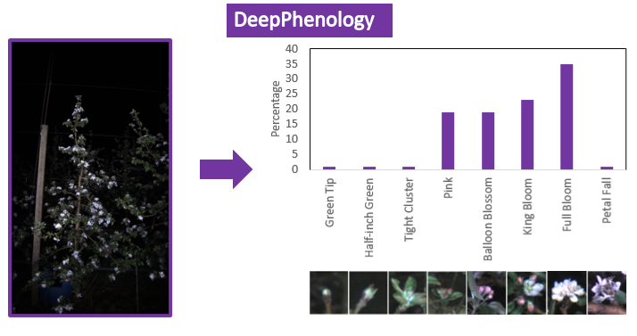
Wang, X, Tang, J, Whitty, MA, 2021, 'DeepPhenology: Estimation of apple flower phenology distributions based on deep learning', Computers and Electronics in Agriculture, vol. 185, pp. 106123.
Wang, X, Tang, J, Whitty, MA, 2021, 'DeepPhenology: Estimation of apple flower phenology distributions based on deep learning', Computers and Electronics in Agriculture, vol. 185, pp. 106123.
[PDF] [BibTex]
Keywords: Phenology; Deep Learning; Apple; Maturity; Image processing
Estimation of phenology distribution in horticultural crops is very important as it governs the timing of chemical thinnning in order to produce good quality fruit. This paper presents a novel phenology distribution estimation method named DeepPhenology for apple flowers based on CNNs using RGB images, which is able to efficiently map the flower distribution on an image-level, row-level and block-level. The image classification model VGG-16 was directly trained with relative phenology distributions calculated from manual counts of flowers in the field and acquired imagery. The proposed method removes the need to labe images, which overcomes difficulties in distringuishing overlapping flower clusters or identifying hidden flower clusters when using 2D imagery. DeepPhenology was test on both daytime and night-time images captured using an RGB camera mounted on a ground vehicle in both Gala and Pink Lady varieties in an Australian orchard. An average Kullback-Leibler (KL) divergence value of 0.23 over all validation sets and an average KL values of 0.27 over all test sets was achieved. Further evaluation has been done by comparing the proposed model with YOLOv5 and shown to outperform this state-of-the-art object detection model for this task. By combining relative phenology distributions from a single image to a row-level or block-level distribution, we are able to give farmers a precise and high-level overview of block performance to form the basis for decisions on chemical thinning applications.
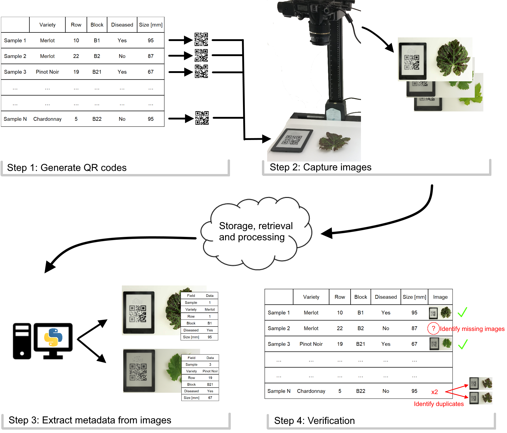
Hill, GN, Whitty, MA, 2020, 'Embedding metadata in images at time of capture using physical Quick Response (QR) codes', Information Processing & Management, vol. 58, no. 3, pp. 102504.
Hill, GN, Whitty, MA, 2020, 'Embedding metadata in images at time of capture using physical Quick Response (QR) codes', Information Processing & Management, vol. 58, no. 3, pp. 102504.
[PDF] [BibTex] [Code]
Keywords: QR code, Metadata, Scientific imaging, Information management, Image processing
Maintaining metadata records for scientific imaging is challenging where the link between the metadata and the image is labour intensive to create and can easily be broken. We propose a method for using QR codes in images of samples to embed the metadata in an open and robust manner, so that it can be readily extracted on demand. By using a novel pipeline for generating QR codes, displaying them in images, reading the QR codes in the images and extracting the metadata for later action such as renaming the image file, a streamlined process for metadata management is introduced. This method was simulated using a range of image types and QR code parameters to identify the limits of various parameter combinations, providing practical insight into code design and usability. The pipeline was also tested with hundreds of images in both laboratory and field situations and proved to be extremely efficient and robust. This method offers potential for anyone taking images of samples who needs to guarantee the existence and correctness of metadata without relying on an external association mechanism.
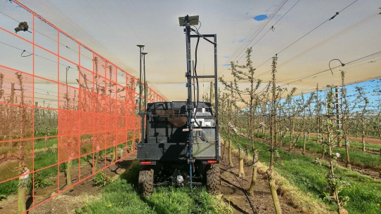
Wang X (Annie); Tang J; Whitty M, 2020, 'Side-view apple flower mapping using edge-based fully convolutional networks for variable rate chemical thinning', Computers and Electronics in Agriculture, vol. 178, pp. 105673.
Wang X (Annie); Tang J; Whitty M, 2020, 'Side-view apple flower mapping using edge-based fully convolutional networks for variable rate chemical thinning', Computers and Electronics in Agriculture, vol. 178, pp. 105673.
[PDF] [BibTex] [Project]
Keywords: Flower detection, Flower density mapping, Semantic segmentation, FCN, Apples
Apple trees commonly require the removal of excessive flowers by thinning to produce high quality fruit. Machine vision has recently been applied to detect the flower density as the first step in this process. Existing work relying on color thresholding is sensitive to imaging conditions and the most recent published work using deep learning in this context has proven to be exceptionally slow to process. This paper presents an apple flower segmentation method on a pixel level based on a Fully Convolutional Network (FCN) together with a process of generating a map that can be used for a variable rate chemical sprayer. Despite the challenging conditions of an uncontrolled environment, our apple flower detector was able to generate a F1 score at pixel- level up to 85.6%, which is a relatively high accuracy in terms of pixel-level segmentation. Our method has been tested on both daytime and night-time datasets, which strongly validates the ability of our apple flower detector to work under different conditions. The resulting detections are georeferenced and merged into a density map in the format necessary for application by a variable rate chemical sprayer. Finally, this flower density mapping system will benefit farmers by visualising the whole crop and extracting useful information to support their decision making for chemical thinning.
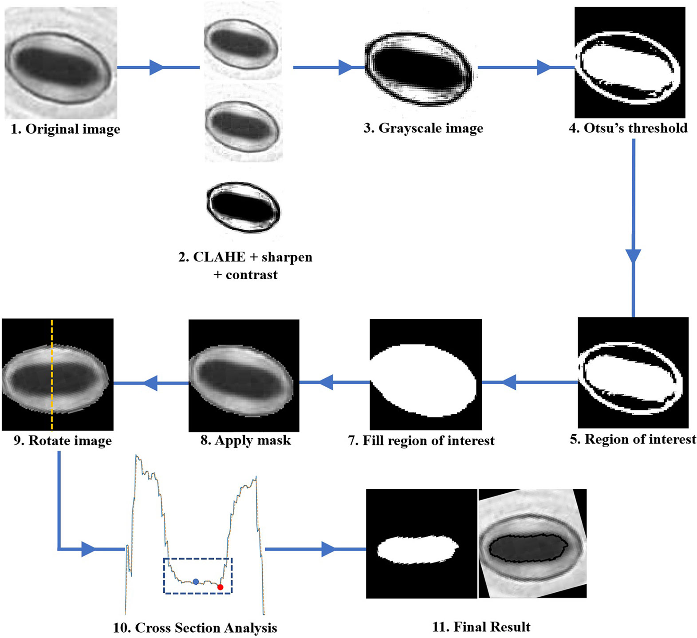
Millstead L; Jayakody H; Patel H; Kaura V; Petrie PR; Tomasetig F; Whitty M, 2020, 'Accelerating Automated Stomata Analysis Through Simplified Sample Collection and Imaging Techniques', Frontiers in Plant Science, vol. 11, pp. 580389.
Millstead L; Jayakody H; Patel H; Kaura V; Petrie PR; Tomasetig F; Whitty M, 2020, 'Accelerating Automated Stomata Analysis Through Simplified Sample Collection and Imaging Techniques', Frontiers in Plant Science, vol. 11, pp. 580389.
[PDF] [BibTex]
Keywords: stomata analysis pipeline, stomata sample collection, stomata pore measurement, high-throughput analysis, microscope imagery
Digital image processing is commonly used in plant health and growth analysis, aiming to improve research efficiency and repeatability. One focus is analysing the morphology of stomata, with the aim to better understand the regulation of gas exchange, its link to photosynthesis and water use and how they are influenced by climatic conditions. Despite the key role played by these cells, their microscopic analysis is largely manual, requiring intricate sample collection, laborious microscope application and the manual operation of a graphical user interface to identify and measure stomata. This research proposes a simple, end-to-end solution which enables automatic analysis of stomata by introducing key changes to imaging techniques, stomata detection as well as stomatal pore area calculation. An optimal procedure was developed for sample collection and imaging by investigating the suitability of using an automatic microscope slide scanner to image nail polish imprints. The use of the slide scanner allows the rapid collection of high-quality images from entire samples with minimal manual effort. A convolutional neural network was used to automatically detect stomata in the input image, achieving average precision, recall and F-score values of 0.79, 0.85, and 0.82 across four plant species. A novel binary segmentation and stomatal cross section analysis method is developed to estimate the pore boundary and calculate the associated area. The pore estimation algorithm correctly identifies stomata pores 73.72% of the time. Ultimately, this research presents a fast and simplified method of stomatal assay generation requiring minimal human intervention, enhancing the speed of acquiring plant health information.

Xin B;Liu S;Whitty M, 2020, 'Three-dimensional reconstruction of Vitis vinifera (L.) cvs Pinot Noir and Merlot grape bunch frameworks using a restricted reconstruction grammar based on the stochastic L-system', Australian Journal of Grape and Wine Research, vol. 26, pp. 207-219.
[PDF] [BibTex]
Keywords: 3D reconstruction, grape bunch framework, reconstruction grammar, stochastic L-system
Background and Aims: Phenotypic traits of grape bunches are known to be
related with grapevine yield, wine flavour and sensitivity to disease. Aiming
to solve a phenotypic bottleneck in current breeding studies as well as to
improve the performance of phenotypic tools, we put forward a combination of
grammar-based reconstruction and vision-based reconstruction, and propose an
empirical reconstruction grammar restricted by an outline hull, which can model
parameters of the entire bunch framework.
Methods and Results: Statistical
analysis of manual measurements of bunches was undertaken to empirically build
a reconstruction grammar for a specific grape cultivar. During the
reconstruction procedure, the grammar takes account of the estimation of the
topological architecture and the geometrical parameters of bunch elements,
while the outline hull formed from the input two-dimensional (2D) image is used
to constrain the volume and the overall shape of the bunch model. The
reconstruction results indicated that the average percentage error of quantity
estimation for various internode types ranged from 19.1 to 41.1%, and the
average percentage error for individual lengths of respective internode types
ranged from -0.4 to 10.4%.
Conclusions: The proposed three-dimensional grape
bunch reconstruction method achieves the parameter modelling of bunch
components by using 2D images as input, and the performance has been shown to
be an improvement over existing work. Significance of the Study: The proposed
method enables a more accurate reconstruction of grape bunch framework, which
facilitates the automatic extraction of phenotypic traits and the improvement
of breeding programs along with vineyard management. Due to its simple sensor
input requirements, it is able to be applied under field conditions.
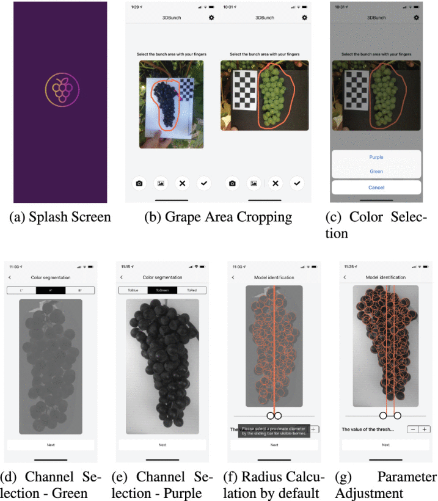
Liu S;Zeng X;Whitty M, 2020, '3DBunch: A novel iOS-smartphone application to evaluate the number of grape berries per bunch using image analysis techniques', IEEE Access, vol. 8, pp. 114663 - 114674.
Liu S;Zeng X;Whitty M, 2020, '3DBunch: A novel iOS-smartphone application to evaluate the number of grape berries per bunch using image analysis techniques', IEEE Access, vol. 8, pp. 114663 - 114674.
[PDF] [BibTex]
Keywords: Berry counting, bunch analysis, image analysis, iOS application, yield estimation
This paper develops a novel smartphone application for counting berries automatically from a single image. The application, called 3DBunch, acquires images from the camera or the album on a smartphone, and then estimates the number of berries by a reconstructed 3D bunch model based on the proposed image analysis techniques that are embedded in the developed iOS app. It also presents features of visualising the statistics of the reconstructed bunch, which including of the distribution of detected berry size in pixels and the total number of berries. It also has the capability of presenting sampling related information, which includes the person who conducted the sampling, the location of samples, the dates of sampling, the variety, farm, vineyards etc. The application was evaluated both on a simulator on a commercial computer and an iPad mini 4. By analysing 291 bunch images from two varieties the app achieved an accuracy of 91% regarding berry counting per bunch. Additionally, the computational time consumed to process 100 images on iPad mini 4 was studied and returned an average of 7.51 seconds per image. Obtaining these results with only a smartphone and a small backing board for capturing a photo with a single bunch, 3DBunch provides an ef cient way for farmers to count berries in-vivo and it is available in the iOS App Store.
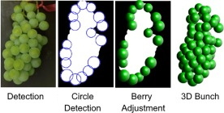
Liu S;Zeng X;Whitty M, 2020, 'A vision-based robust grape berry counting algorithm for fast calibration-free bunch weight estimation in the field', Computers and Electronics in Agriculture, vol. 173, p. 105360.
Liu S;Zeng X;Whitty M, 2020, 'A vision-based robust grape berry counting algorithm for fast calibration-free bunch weight estimation in the field', Computers and Electronics in Agriculture, vol. 173, p. 105360.
[PDF] [BibTex] [Video]
Keywords: Grape bunch; Bunch reconstruction; Image processing; Berry counting; Bunch weight; Yield estimation
Counting the number of berries per bunch is a key component of many yield estimation processes but is exceptionally tedious for farmers to complete. Recent work into image processing in viticulture has produced methods for berry counting, however these require some degree of manual intervention or need calibration to manual counts for different bunch architectures. Therefore, this paper introduces a fast and robust calibration-free algorithm for berry counting for winegrapes to aid yield estimation. The algorithm was tested on 529 images collected in the field at multiple vineyards at different maturity stages and achieved an accuracy of approximately 89% per bunch. As it would mostly likely be used to obtain an average value across a block, the low bias of this method resulted in an average accuracy of 99% and was shown to be robust from pea-sized to harvest and between both red and green bunches. Taking only 0.1 to 1 s per image to process and requiring only a smartphone and small backing board to capture, the algorithm can readily be applied to images which are captured in the field by farmers. This allowed bunch weights to be estimated to within 92% accuracy and assisted larger scale yield estimation processes to achieve accuracies of between 3% and 16%. The robustness of the method lays the foundation for fast fruit-set ratio determination and more detailed bunch architecture studies in vivo on a large scale.
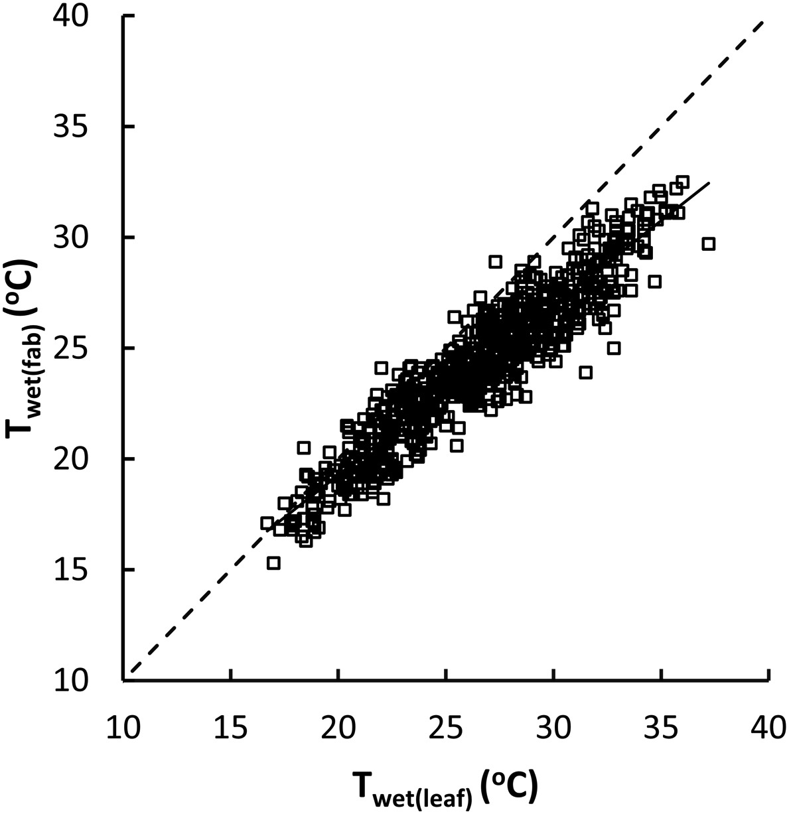
Petrie PR;Wang Y;Liu S;Lam S;Whitty MA;Skewes MA, 2019, 'The accuracy and utility of a low cost thermal camera and smartphone-based system to assess grapevine water status', Biosystems Engineering, vol. 179
Petrie PR;Wang Y;Liu S;Lam S;Whitty MA;Skewes MA, 2019, 'The accuracy and utility of a low cost thermal camera and smartphone-based system to assess grapevine water status', Biosystems Engineering, vol. 179
[PDF] [BibTex]
Keywords: Infrared thermometry; Irrigation scheduling; Reference surfaces; Stomatal conductance; Stem water potential; Smartphone application
Smartphones have several advantages over specialist monitoring systems including ubiquity, price, and ease of implementing updates. Thermal imaging can be used to assess plant water status and allow more informed irrigation decisions; unfortunately, this technique has not been widely adopted due to the high cost of equipment and the lack of a system to provide analysis and results in real-time. Several inexpensive thermal cameras that connect to smartphones have recently been released and one of these (FLIR One) was evaluated as part of a system to assess grapevine water status. Irrigation treatments were established on Cabernet Sauvignon and Chardonnay vines in an arid region. Thermal images were taken from the shaded side of the grapevine canopy and software was developed to automatically determine the temperature of the canopy and artificial reference leaves. The temperature readings and metrological inputs were used to calculate five indices of water status including the Crop Water Stress Index (CWSI) and the stomatal conductance index.
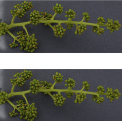
Liu S;Li XS;Wu HK;Xin BL;Tang J;Petrie P;Whitty M, 2017, 'A robust automated flower estimation system forgrape vines', Biosystems Engineering, vol. 172.
Liu S;Li XS;Wu HK;Xin BL;Tang J;Petrie P;Whitty M, 2017, 'A robust automated flower estimation system forgrape vines', Biosystems Engineering, vol. 172.
[PDF] [BibTex]
Keywords: Flower counting; Image processing; Grape vine; Computer vision; Grape yield estimation
Automated flower counting systems have recently been developed to process images of grapevine inflorescences, which assist in the critical tasks of determining potential yields early in the season and measurement of fruit-set ratios without arduous manual counting. In this paper, we introduce a robust flower estimation system comprised of an improved flower candidate detection algorithm, flower classification and finally flower estimation using calibration models. These elements of the system have been tested in eight aspects across 533 images with associated manual counts to determine the overall accuracy and how it is affected by experimental conditions.
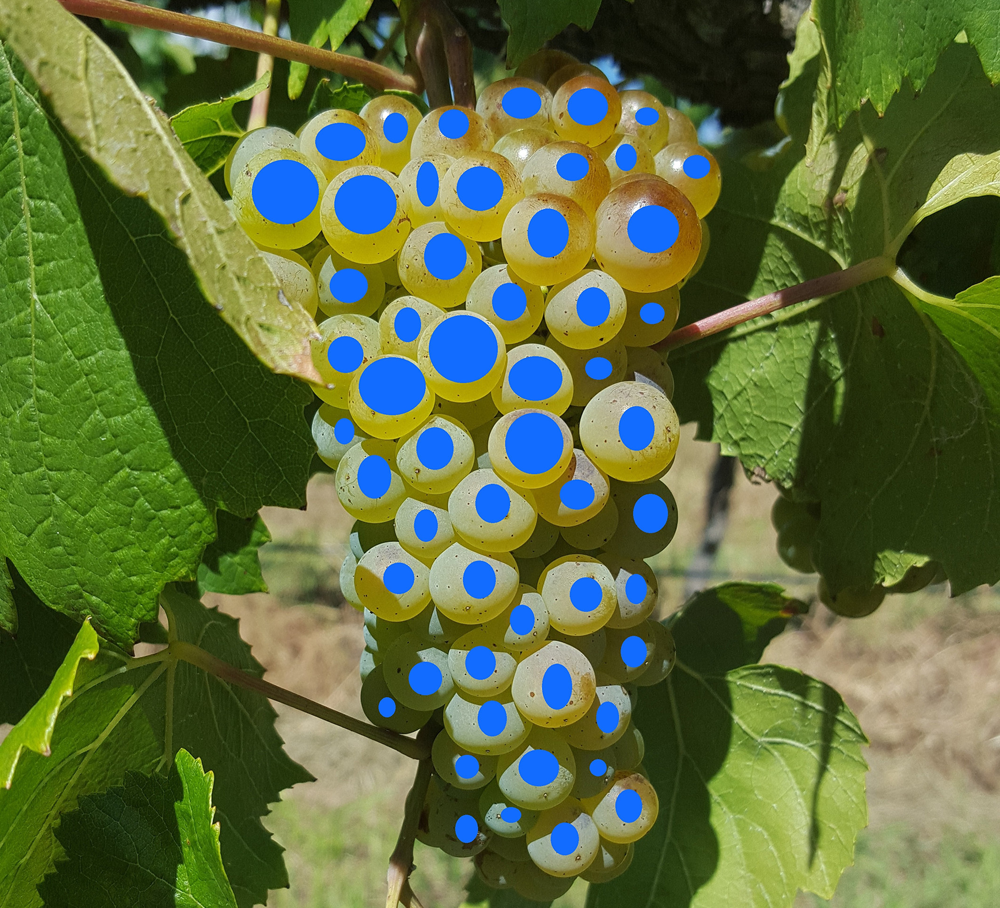
Tang J;Petrie P;Whitty M, 2018, 'Modelling relationships between visible winegrape berries and bunch maturity', Australian Journal of Grape and Wine Research.
Tang J;Petrie P;Whitty M, 2018, 'Modelling relationships between visible winegrape berries and bunch maturity', Australian Journal of Grape and Wine Research.
[PDF] [BibTex]
Keywords: Fruit composition; Non-destructive methods; Ripening; Sampling; Sugar concentration
Rapid and non-destructive techniques for measuring grape composition have the potential to improve harvest decisions and to allow the batching of fruit into parcels of similar composition to improve processing efficiency. If such techniques are to be based on the non-destructive assessment of visible berries, then relationships between the composition of visible berries and that of the whole bunch will need to be described. Total soluble solids, pH, TA and the concentration of anthocyanin, phenolic substances and tannin of visible berries and associated entire bunches of Shiraz and Chardonnay were measured over three seasons. Good correlations were obtained between the composition of visible berries and that of the entire bunch. Most relationships were not 1:1 but were consistent and stable across seasons. The accuracy and stability across the seasons of relationships between the composition of visible berries and that of the entire bunch for both Chardonnay and Shiraz were evaluated. The approaches used in this study to predict bunch composition from visible berry composition could aid the development of non-destructive techniques based on sensing visible berries to assess grape composition during ripening.
Liu S;Li XS;Wu HK;Xin BL;Tang J;Petrie P;Whitty M, 2017, 'A robust automated flower estimation system forgrape vines', Biosystems Engineering, vol. 172.
[PDF] [BibTex]
Keywords: Flower counting; Image processing; Grape vine; Computer vision; Grape yield estimation
Automated flower counting systems have recently been developed to process images of grapevine inflorescences, which assist in the critical tasks of determining potential yields early in the season and measurement of fruit-set ratios without arduous manual counting. In this paper, we introduce a robust flower estimation system comprised of an improved flower candidate detection algorithm, flower classification and finally flower estimation using calibration models. These elements of the system have been tested in eight aspects across 533 images with associated manual counts to determine the overall accuracy and how it is affected by experimental conditions.
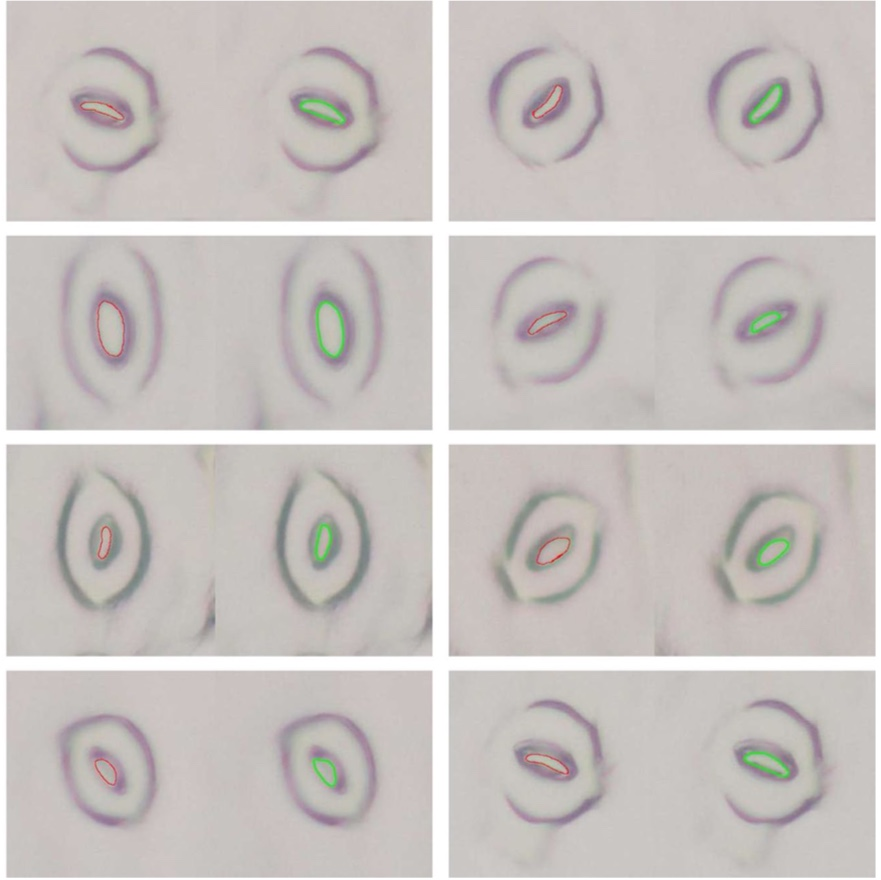
Jayakody H;Liu S;Whitty M;Petrie P, 2017, 'Microscope image based fully automated stomata detection and pore measurement method for grapevines', Plant Methods, vol. 13.
Jayakody H;Liu S;Whitty M;Petrie P, 2017, 'Microscope image based fully automated stomata detection and pore measurement method for grapevines', Plant Methods, vol. 13.
[PDF] [BibTex] [Dataset] [Code]
Keywords: Stomatal morphology; Automatic stomata detection; Cascade object detection; Image processing; Skeletonization; Machine learning; Stomata; Grapevines
Stomatal behavior in grapevines has been identified as a good indicator of the water stress level and overall health of the plant. Microscope images are often used to analyze stomatal behavior in plants. However, most of the current approaches involve manual measurement of stomatal features. The main aim of this research is to develop a fully automated stomata detection and pore measurement method for grapevines, taking microscope images as the input. The proposed approach, which employs machine learning and image processing techniques, can outperform available manual and semi-automatic methods used to identify and estimate stomatal morphological features.
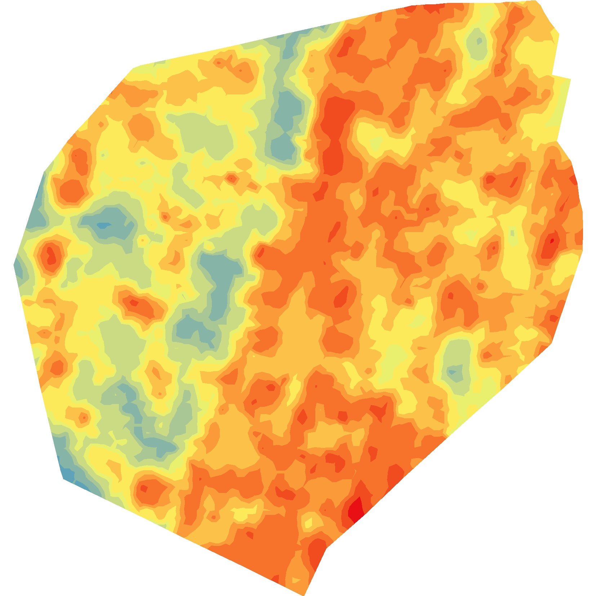
Liu S;Cossell S;Tang J;Dunn G;Whitty M, 2017, 'A computer vision system for early stage grape yield estimation based on shoot detection', Computers and Electronics in Agriculture, vol. 137, pp. 88 - 101.
Liu S;Cossell S;Tang J;Dunn G;Whitty M, 2017, 'A computer vision system for early stage grape yield estimation based on shoot detection', Computers and Electronics in Agriculture, vol. 137, pp. 88 - 101.
[PDF] [BibTex]
Keywords: Grape yield estimation; Shoot detection; Feature selection; Data classification; Vineyard mapping
Counting grapevine shoots early in the growing season is critical for adjusting management practices but is challenging to automate due to a range of environmental factors. This paper proposes a completely automatic system for grapevine yield estimation, comprised of robust shoot detection and yield estimation based on shoot counts produced from videos. Experiments were conducted on four vine blocks across two cultivars and trellis systems over two seasons. A novel shoot detection framework is presented, including image processing, feature extraction, unsupervised feature selection and unsupervised learning as a final classification step. Then a procedure for converting shoot counts from videos to yield estimates is introduced.
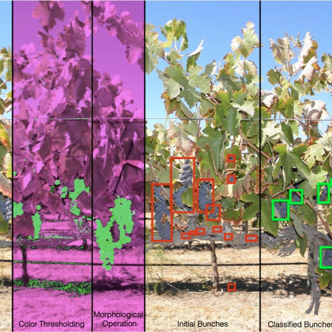
Liu S; Whitty M, 2015, 'Automatic grape bunch detection in vineyards with an SVM classifier', Journal of Applied Logic, vol. 13, pp. 643 - 653.
[PDF] [BibTex]
Keywords: Bunch detection; Image processing; Low cost computation; Precision viticulture; Yield estimation; Field application
Precise yield estimation in vineyards using image processing techniques has only been demonstrated conceptually on a small scale. Expanding this scale requires significant computational power where, by necessity, only small parts of the images of vines contain useful features. This paper introduces an image processing algorithm combining colour and texture information and the use of a support vector machine, to accelerate fruit detection by isolating and counting bunches in images. Experiments carried out on two varieties of red grapes (Shiraz and Cabernet Sauvignon) demonstrate an accuracy of 88.0% and recall of 91.6%. This method is also shown to remove the restriction on the field of view and background which plagued existing methods and is a first step towards precise and reliable yield estimation on a large scale.
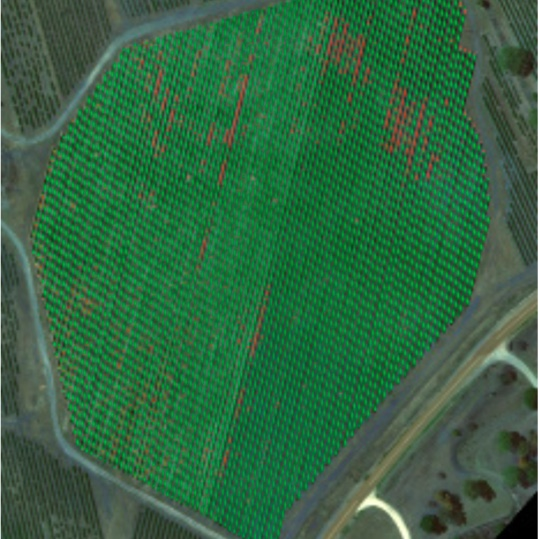
Tang J;Woods M;Cossell S;Liu S;Whitty M, 2016, 'Non-Productive Vine Canopy Estimation through Proximal and Remote Sensing,in IFAC-PapersOnLine, pp. 398 - 403.
[PDF] [BibTex]
Keywords: NDVI; Yield estimation; Decision support systems; Automation; Mapping; Machine learning
Non-productive canopy detection in a viticultural block is a key factor in reducing the drain on infrastructure and improving management practices. However, current methods are significant in cost, biased, and do not provide information on location of non-productive canopy. This paper proposes both a proximal and remote sensing method for assisting in decision support and yield estimation from available technologies. The proximal method utilizes two different measures of green pixel thresholding in video frames, with results providing a useful relative measure of productivity across a vineyard block at the phenological stage of shoots. The remote sensing method utilizes local thresholding and Self-Organizing-Maps on aerial imagery to identify missing vines and total non-productive canopy on a block level. Results indicate the success of this semi-supervised method in providing a useful measure of non-productive canopy at the phenological stage of veraison; laying the groundwork for improved methods in this area.
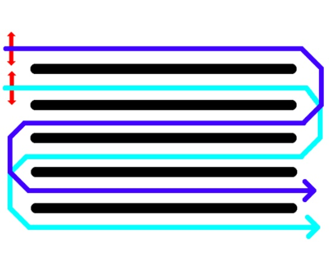
Cossell S;Whitty M;Liu S;Tang J, 2016, 'Spatial Map Generation from Low Cost Ground Vehicle Mounted Monocular Camera in IFAC-PapersOnLine, pp. 231 - 236.
[PDF] [BibTex]
Keywords: Computer vision; Viticulture; Spatial mapping; Proximal sensing
This paper presents a method for generating a spatial map of a particular plant or environmental property of a vineyard block based on low cost camera technology and existing vineyard vehicles. Such properties can range from leaf area, per vine bunch count or bare-wire detection. The paper provides a low cost ground vehicle based solution that does not rely on live GPS position recording. Rather, the relative estimated motion between video frames is used to localize each sensor reading within the bounds of each row. Row end locations are derived from post-processed GPS recorded locations of the perimeter of a block with an aerial photograph. This paper uses the proportion of leaf colored pixels in a video frame as a token example of measuring the relative growth of vines during the shoots stage.
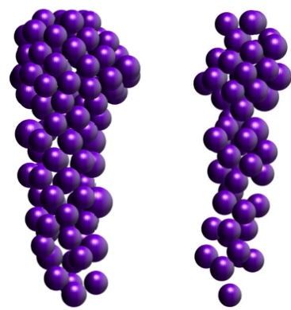
Liu S;Whitty M;Cossell S, 2015, 'A Lightweight Method for Grape Berry Counting based on Automated 3D Bunch Reconstruction from a Single Image, presented at ICRA, International Conference on Robotics and Automation (IEEE), Workshop on Robotics in Agriculture, Seattle, 30 - 30 May 2015.
[PDF] [BibTex] [Datasets]
Keywords: Grape; Berry; Viticulture; Image Processing; 3D Bunch Reconstruction
Berry counting is an integral step towards grape vine yield estimation. As a traditional yield estimation step, counting berry by human hand is tedious and time consuming. Recent methods have approached this using specialized stereo cameras and lighting rigs which are impractical for a large scale field application. This paper presents a lightweight method for generating a representative 3D reconstruction of an individual grape bunch from a single image from one side of the bunch. The results were poor prior to the application of a sparsity factor to compensate for bunches of varying sparsity, with the final result being an absolute average accuracy of 87.6% and average error of 4.6%, with an R2 value of 0.85. These results show promise for in vivo counting of berry numbers in a noncomputationally expensive manner.
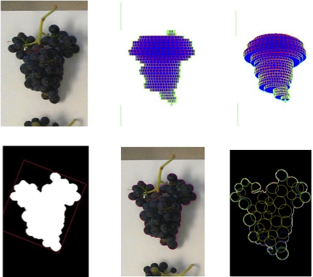
Liu S;Marden S;Whitty M, 2013, 'Towards automated yield estimation in viticulture, presented at ICRA, in Australasian Conference on Robotics and Automation, Sydney, Australia, December, 2013.
[PDF] [BibTex]
Keywords: Yield Estimation; Grape; Image Processing
Forecasting the grape yield of vineyards is of critical importance in the wine industry, as it allows grape growers to more accurately and confidently invests in capital equipment, negotiate pricing, schedule labour and develop marketing strategies. The first step in automating this procedure is to accurately estimate the weight of fruit on the vine and thus this paper presents a survey of the automated image processing methods which have been applied to this problem. Using manually harvested bunches photographed in a laboratory environment, the contribution of various bunch parameters to the weight of a bunch was examined to provide a baseline for the accuracy of weight calculation methods. Then, several recent colour classification methods were compared using images of grapes in vivo. The results showed that a linear regression approach to bunch weight estimation using berry number, bunch perimeter, bunch area and estimated bunch volume was accurate to within 5.3%. Results from in vivo colour classification showed a weight prediction accuracy of 4.5% on a much smaller dataset, demonstrating the promise of this approach in achieving grape grower yield estimation targets.
Other publications
- Liu S;Tang J;Petrie P;Whitty M, 2016, 'A fast method to measure stomatal aperture by MSER on smart mobile phone', in Optics InfoBase Conference Papers.
- Skewes M;Liu S;Petrie P;Whitty MA, 2016, ' Smart Phone Tools for Measuring Vine Water Status', International Symposium on Sensing Plant Water Status, Potsdam, Germany, October 2016.
- Liu S;Whitty M;Jayakody H, 2016, 'Grape berry counting based on automated 3D bunch reconstruction from a single image', in 16th AWITC proceedings, 16th Australian Wine Industry Technical Conference, Adelaide, South Australia, 24 - 28 July 2016
- Liu S;Tang J;Cossell S;Whitty M, 2015, 'Detection of shoots in vineyards by unsupervised learning with over the row computer vision system', in Australasian Conference on Robotics and Automation, ACRA.
- Tang J;Liu S;Cossell S;Whitty M, 2015, 'Addressing Big Issues in Agriculture: A Case Study on Rapid and High Fidelity Yield Mapping', in 14th APRU Doctoral Students Conference, Hangzhou, China, 23 - 27 November 2015
- Liu S;Whitty M;Cossell S, 2015, 'Automatic grape bunch detection in vineyards for precise yield estimation', in Proceedings of the 14th IAPR International Conference on Machine Vision Applications, MVA 2015, pp. 238 - 241, Tokyo, Japan, May 2015.
Reports
- Whitty M;Liu S;cossell S;Jayakody H;Woods M;Tang J;Singh S;van Kerk Oerle P;Wiseham D;Liu S;Davidson A;Stocco T;Jarrett J;Jarrett P;Wotton C;Shepherd J;Lim S;Petrie PR;Dunn G, 2017, Improved yield prediction for the Australian wine industry, Wine Australia, Adelaide, South Australia, DPI1401,
Conference Posters
- Skewes M;Liu S;Whitty MA;Petrie P, 2016, 'Using a Smartphone to Measure Vine Water Status', presented at Australian Wine Industry Technical Conference, 24 - 28 July 2016
- Woods MR;Whitty MA;Cossell S;Liu S;Tang J;Dunn G;Petrie P;Davidson A;Wotton C;Jarrett J, 2016, 'An Initial Investigation into Harvest Efficiency', Adelaide, presented at Australian Wine Industry Technical Conference, Adelaide, 24 - 28 July 2016
Presentations
- Tang J, Whitty M, 20211102, 'Automated Detection of Grapevine Trunk Disease from Side-view Images', presented at Collabriculture, Stone and Chalk, 2 November 2021 [PDF (439MB with embedded videos)]
- Whitty MA, 2019, 'Applications of Image Processing in Agriculture', presented at Workshop on Agricultural Robotics, AGRICONTROL, Sydney, 3 December 2019 [PDF (305MB with embedded videos)]
- Whitty MA, 2019, 'Bunch Rachis Reconstruction from a Single Image', presented at Plant and Food Research, Blenheim, 12 February 2019 [PDF]
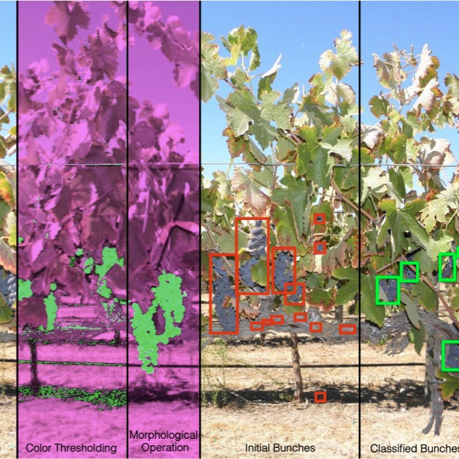
Liu S; Whitty M, 2015, 'Automatic grape bunch detection in vineyards with an SVM classifier', Journal of Applied Logic, vol. 13, pp. 643 - 653.
Liu S; Whitty M, 2015, 'Automatic grape bunch detection in vineyards with an SVM classifier', Journal of Applied Logic, vol. 13, pp. 643 - 653.
[PDF] [BibTex]
Keywords: Bunch detection; Image processing; Low cost computation; Precision viticulture; Yield estimation; Field application
Precise yield estimation in vineyards using image processing techniques has only been demonstrated conceptually on a small scale. Expanding this scale requires significant computational power where, by necessity, only small parts of the images of vines contain useful features. This paper introduces an image processing algorithm combining colour and texture information and the use of a support vector machine, to accelerate fruit detection by isolating and counting bunches in images. Experiments carried out on two varieties of red grapes (Shiraz and Cabernet Sauvignon) demonstrate an accuracy of 88.0% and recall of 91.6%. This method is also shown to remove the restriction on the field of view and background which plagued existing methods and is a first step towards precise and reliable yield estimation on a large scale.
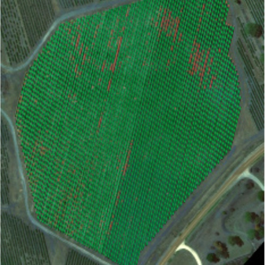
Tang J;Woods M;Cossell S;Liu S;Whitty M, 2016, 'Non-Productive Vine Canopy Estimation through Proximal and Remote Sensing,in IFAC-PapersOnLine, pp. 398 - 403.
Tang J;Woods M;Cossell S;Liu S;Whitty M, 2016, 'Non-Productive Vine Canopy Estimation through Proximal and Remote Sensing,in IFAC-PapersOnLine, pp. 398 - 403.
[PDF] [BibTex]
Keywords: NDVI; Yield estimation; Decision support systems; Automation; Mapping; Machine learning
Non-productive canopy detection in a viticultural block is a key factor in reducing the drain on infrastructure and improving management practices. However, current methods are significant in cost, biased, and do not provide information on location of non-productive canopy. This paper proposes both a proximal and remote sensing method for assisting in decision support and yield estimation from available technologies. The proximal method utilizes two different measures of green pixel thresholding in video frames, with results providing a useful relative measure of productivity across a vineyard block at the phenological stage of shoots. The remote sensing method utilizes local thresholding and Self-Organizing-Maps on aerial imagery to identify missing vines and total non-productive canopy on a block level. Results indicate the success of this semi-supervised method in providing a useful measure of non-productive canopy at the phenological stage of veraison; laying the groundwork for improved methods in this area.
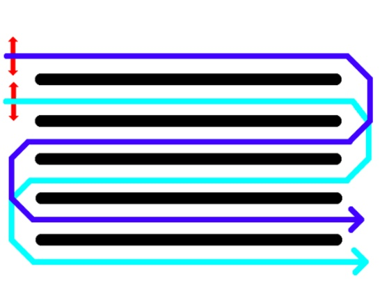
Cossell S;Whitty M;Liu S;Tang J, 2016, 'Spatial Map Generation from Low Cost Ground Vehicle Mounted Monocular Camera in IFAC-PapersOnLine, pp. 231 - 236.
Cossell S;Whitty M;Liu S;Tang J, 2016, 'Spatial Map Generation from Low Cost Ground Vehicle Mounted Monocular Camera in IFAC-PapersOnLine, pp. 231 - 236.
[PDF] [BibTex]
Keywords: Computer vision; Viticulture; Spatial mapping; Proximal sensing
This paper presents a method for generating a spatial map of a particular plant or environmental property of a vineyard block based on low cost camera technology and existing vineyard vehicles. Such properties can range from leaf area, per vine bunch count or bare-wire detection. The paper provides a low cost ground vehicle based solution that does not rely on live GPS position recording. Rather, the relative estimated motion between video frames is used to localize each sensor reading within the bounds of each row. Row end locations are derived from post-processed GPS recorded locations of the perimeter of a block with an aerial photograph. This paper uses the proportion of leaf colored pixels in a video frame as a token example of measuring the relative growth of vines during the shoots stage.
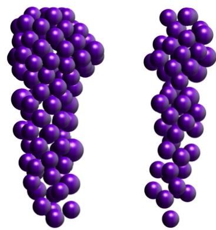
Liu S;Whitty M;Cossell S, 2015, 'A Lightweight Method for Grape Berry Counting based on Automated 3D Bunch Reconstruction from a Single Image, presented at ICRA, International Conference on Robotics and Automation (IEEE), Workshop on Robotics in Agriculture, Seattle, 30 - 30 May 2015.
Liu S;Whitty M;Cossell S, 2015, 'A Lightweight Method for Grape Berry Counting based on Automated 3D Bunch Reconstruction from a Single Image, presented at ICRA, International Conference on Robotics and Automation (IEEE), Workshop on Robotics in Agriculture, Seattle, 30 - 30 May 2015.
[PDF] [BibTex] [Datasets]
Keywords: Grape; Berry; Viticulture; Image Processing; 3D Bunch Reconstruction
Berry counting is an integral step towards grape vine yield estimation. As a traditional yield estimation step, counting berry by human hand is tedious and time consuming. Recent methods have approached this using specialized stereo cameras and lighting rigs which are impractical for a large scale field application. This paper presents a lightweight method for generating a representative 3D reconstruction of an individual grape bunch from a single image from one side of the bunch. The results were poor prior to the application of a sparsity factor to compensate for bunches of varying sparsity, with the final result being an absolute average accuracy of 87.6% and average error of 4.6%, with an R2 value of 0.85. These results show promise for in vivo counting of berry numbers in a noncomputationally expensive manner.
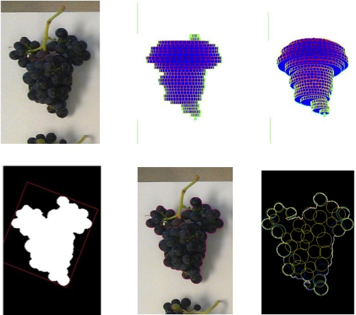
Liu S;Marden S;Whitty M, 2013, 'Towards automated yield estimation in viticulture, presented at ICRA, in Australasian Conference on Robotics and Automation, Sydney, Australia, December, 2013.
Liu S;Marden S;Whitty M, 2013, 'Towards automated yield estimation in viticulture, presented at ICRA, in Australasian Conference on Robotics and Automation, Sydney, Australia, December, 2013.
[PDF] [BibTex]
Keywords: Yield Estimation; Grape; Image Processing
Forecasting the grape yield of vineyards is of critical importance in the wine industry, as it allows grape growers to more accurately and confidently invests in capital equipment, negotiate pricing, schedule labour and develop marketing strategies. The first step in automating this procedure is to accurately estimate the weight of fruit on the vine and thus this paper presents a survey of the automated image processing methods which have been applied to this problem. Using manually harvested bunches photographed in a laboratory environment, the contribution of various bunch parameters to the weight of a bunch was examined to provide a baseline for the accuracy of weight calculation methods. Then, several recent colour classification methods were compared using images of grapes in vivo. The results showed that a linear regression approach to bunch weight estimation using berry number, bunch perimeter, bunch area and estimated bunch volume was accurate to within 5.3%. Results from in vivo colour classification showed a weight prediction accuracy of 4.5% on a much smaller dataset, demonstrating the promise of this approach in achieving grape grower yield estimation targets.
Other publications
- Liu S;Tang J;Petrie P;Whitty M, 2016, 'A fast method to measure stomatal aperture by MSER on smart mobile phone', in Optics InfoBase Conference Papers.
- Skewes M;Liu S;Petrie P;Whitty MA, 2016, ' Smart Phone Tools for Measuring Vine Water Status', International Symposium on Sensing Plant Water Status, Potsdam, Germany, October 2016.
- Liu S;Whitty M;Jayakody H, 2016, 'Grape berry counting based on automated 3D bunch reconstruction from a single image', in 16th AWITC proceedings, 16th Australian Wine Industry Technical Conference, Adelaide, South Australia, 24 - 28 July 2016
- Liu S;Tang J;Cossell S;Whitty M, 2015, 'Detection of shoots in vineyards by unsupervised learning with over the row computer vision system', in Australasian Conference on Robotics and Automation, ACRA.
- Tang J;Liu S;Cossell S;Whitty M, 2015, 'Addressing Big Issues in Agriculture: A Case Study on Rapid and High Fidelity Yield Mapping', in 14th APRU Doctoral Students Conference, Hangzhou, China, 23 - 27 November 2015
- Liu S;Whitty M;Cossell S, 2015, 'Automatic grape bunch detection in vineyards for precise yield estimation', in Proceedings of the 14th IAPR International Conference on Machine Vision Applications, MVA 2015, pp. 238 - 241, Tokyo, Japan, May 2015.
Reports
- Whitty M;Liu S;cossell S;Jayakody H;Woods M;Tang J;Singh S;van Kerk Oerle P;Wiseham D;Liu S;Davidson A;Stocco T;Jarrett J;Jarrett P;Wotton C;Shepherd J;Lim S;Petrie PR;Dunn G, 2017, Improved yield prediction for the Australian wine industry, Wine Australia, Adelaide, South Australia, DPI1401,
Conference Posters
- Skewes M;Liu S;Whitty MA;Petrie P, 2016, 'Using a Smartphone to Measure Vine Water Status', presented at Australian Wine Industry Technical Conference, 24 - 28 July 2016
- Woods MR;Whitty MA;Cossell S;Liu S;Tang J;Dunn G;Petrie P;Davidson A;Wotton C;Jarrett J, 2016, 'An Initial Investigation into Harvest Efficiency', Adelaide, presented at Australian Wine Industry Technical Conference, Adelaide, 24 - 28 July 2016
Presentations
- Tang J, Whitty M, 20211102, 'Automated Detection of Grapevine Trunk Disease from Side-view Images', presented at Collabriculture, Stone and Chalk, 2 November 2021 [PDF (439MB with embedded videos)]
- Whitty MA, 2019, 'Applications of Image Processing in Agriculture', presented at Workshop on Agricultural Robotics, AGRICONTROL, Sydney, 3 December 2019 [PDF (305MB with embedded videos)]
- Whitty MA, 2019, 'Bunch Rachis Reconstruction from a Single Image', presented at Plant and Food Research, Blenheim, 12 February 2019 [PDF]